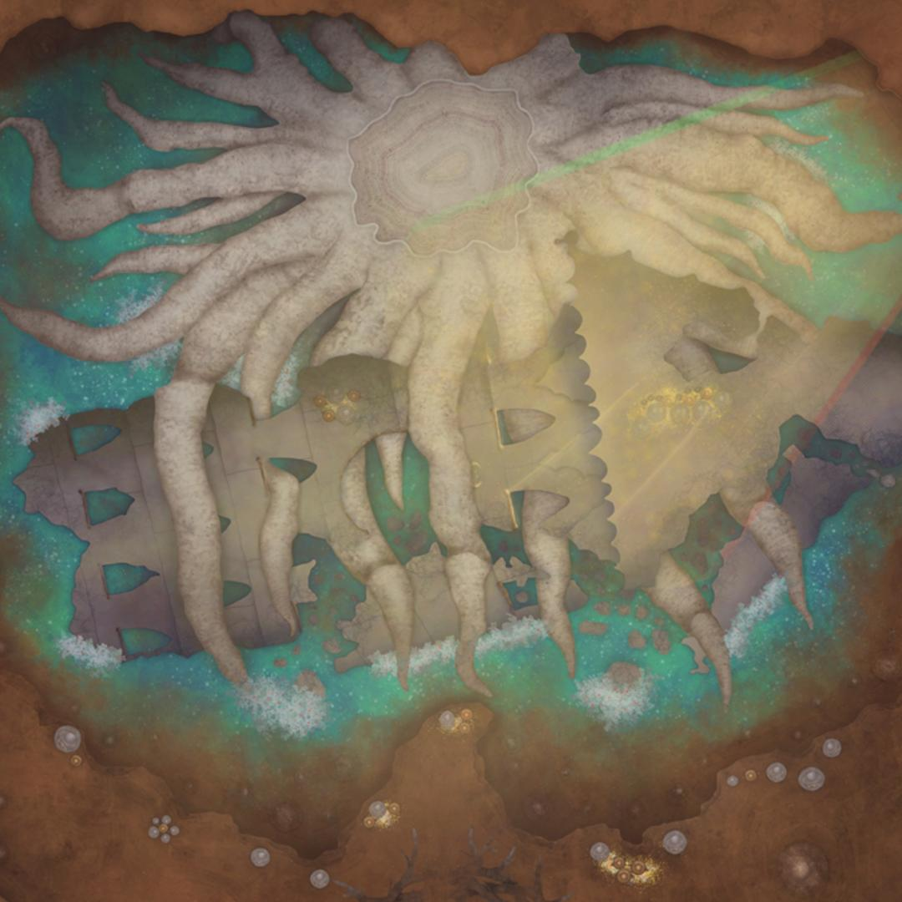
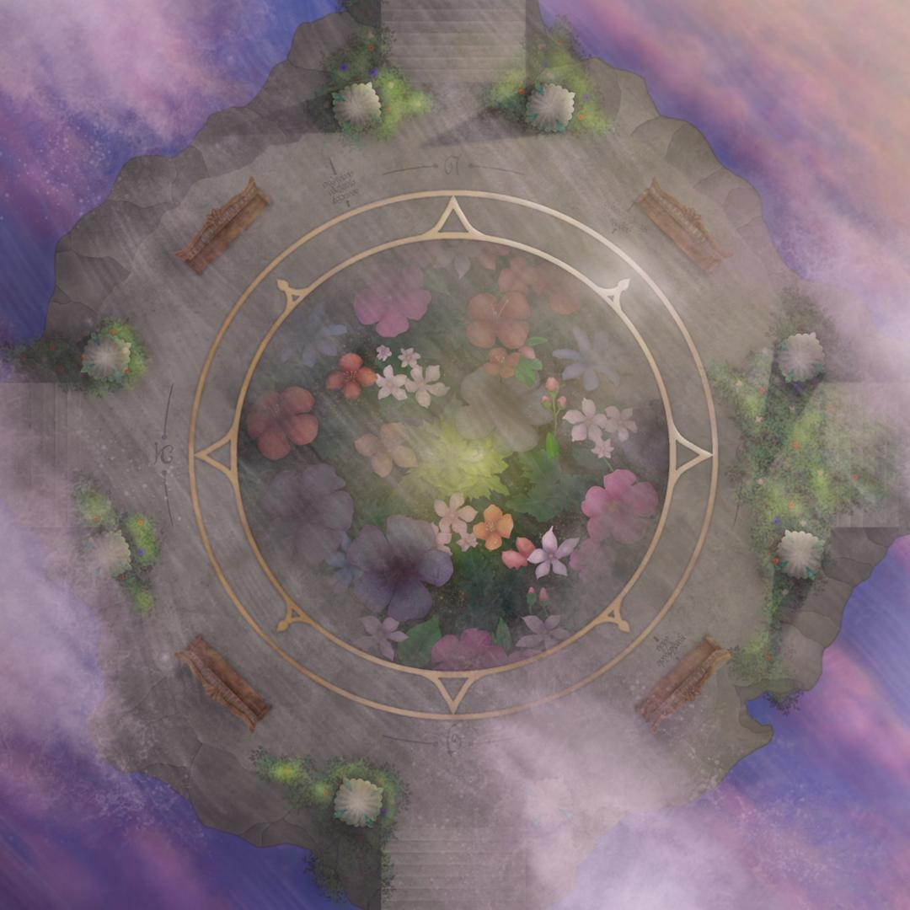
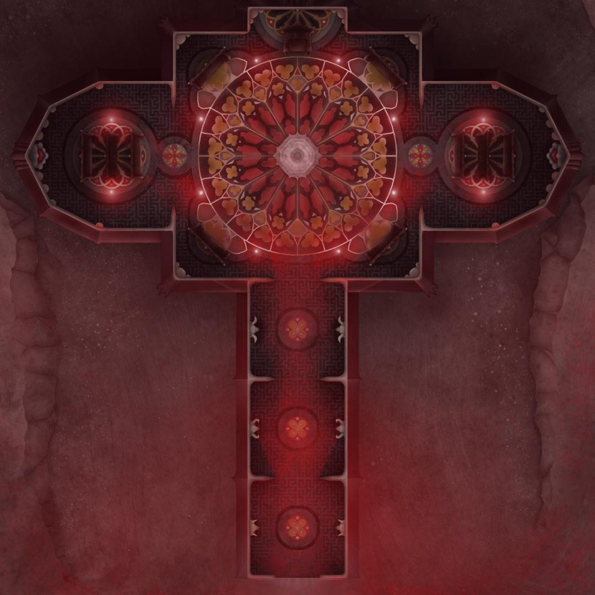

Laterna magika (Czech: Laterna magika), largely considered the world's first multimedia
theatre, was founded as a cultural program at the 1958 Brussels Expo.[1] It launched its
official activity on 9 May 1959, as an independent company of the National Theatre,
performing at the Adria palace in Prague. Wonderful Circus, which premiered in 1977, is the
most frequently performed theatre piece in Central Europe, and has remained in the
repertoire ever since. Laterna magika now is one of the ensembles of the National Theatre,
based at the New Stage of the National Theatre in Prague. Laterna magika productions blend
various genres, ranging from dramatic acting through affording a dominant role to dance and
ballet to mime and Black Theatre. All of their productions have been original works directly
created for the company, not ready-made pieces, which, with a few exceptions, have never
subsequently appeared in the repertoire of another company. The fundamental principle
(interaction between film projection and live dramatic action) has been gradually
supplemented with new technologies, for instance, digital projection or new media, including
real-time programmable software. m illum at facilis, placeat quos minima corporis
expedita cumque dolore atque eum!


